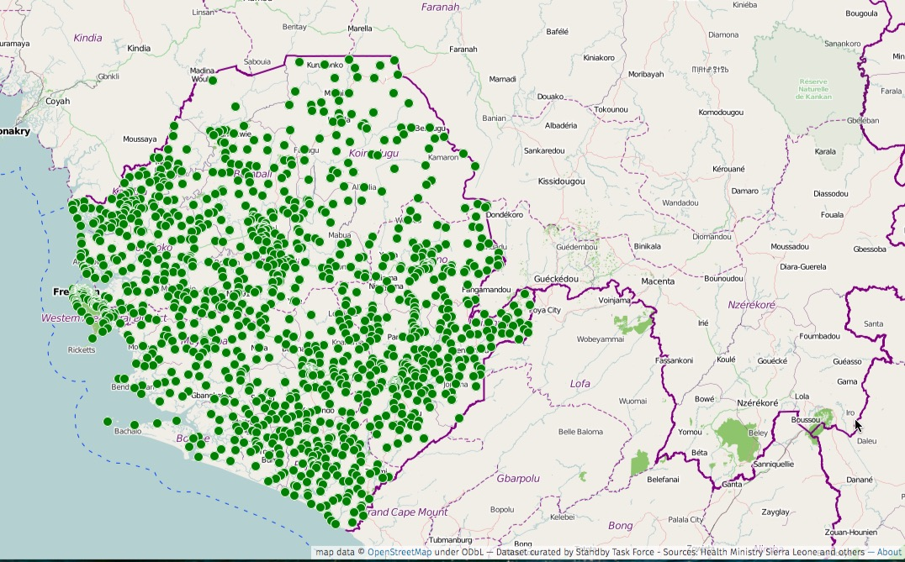

Healthcare systems in Ebola affected countries: so many reports, so little data
A case for a sustainable health open data ecosystem in developing countries.
When in March 2014 Médecins Sans Frontières (MSF) confirmed the Ebola outbreak in Guéckédou, a remote prefecture of Guinea, they responded by immediately setting up isolation centres to contain the epidemic. But it was already too late. The virus had spread to other areas including neighbouring countries Liberia and Sierra Leone.
Since then, the health community has been engaged in a chase with the epidemic, and they now recognise they will probably need large-scale vaccination to control it. As we are entering in the second year of the outbreak, the virus has already infected more than 20,000 people, the epidemic may be slowing down, but there is still no vaccine.
Dysfunctional health systems are cited among the key factors that enabled the epidemic to spread so quickly. Lack of trained doctors, inadequate medical equipments and missing supplies undermined first response efforts.
Additionally, the lack of key information on the affected areas slowed down the humanitarian response. It was indeed crucial for the teams on the ground to be able to move quickly through the territories, locate households of infected people and decide where to set up the isolation centres. But most of the data required to perform these actions were missing. This is why one of first call of MSF was to ask to cartONG and The Humanitarian OpenStreetMap Team for coordinating a crowd sourced mapping activity of the areas. Since March 2014, 2,600 contributors have edited more than 12 million objects online. Maps of Liberia, Sierra Leone and Guinea have never been so accurate.
However, there are other essential data that you cannot crowd source so easily. When a territory is hit by Ebola, you need to know about the health facilities, their position, their equipments, the number of beds and doctors. The virus not only kills the majority of infected people, but it also disrupts fragile health systems and affect all the populations who need care. The challenge is to avoid collateral damage. As such, existence and access to health system data is critical.
This is the responsibility of local health organisations to collect and provide local health information. But they are not alone, in particular in developing countries where Governments cooperate extensively with international NGOs. [About 150 organisations have already been contributing to the Ebola response](https://data.hdx.rwlabs.org/dataset/3w-dataset-on-the-organizations-involved-in-the-response-to-the-ebola-crisis ). It is in their common interest to make the information circulate. And this applies especially to governments.
Nowadays, thanks to free open source softwares, more and more developing countries are using digital tools to manage their healthcare system. DHIS 2 software is one them. The application, developed by the University of Oslo, is mainly used for collecting and managing health surveys and other key data from health facilities. The software has already been adopted by 30 countries and can be combined to other open source systems such as iHris, which provides information on health workforces.
But gathering health data is one step, making them reusable by everyone is another. So far, very few countries have released data from their DHIS 2 platform as open data. Burkina Faso, who released key health data as part of its Open Data Initiative, is one of the few here. In affected Sierra Leone, thanks to the support of the local Open Government Initiative and the World Bank, the Ministry of Health and Sanitation released its geo-referenced health facilities. Once published, the data set has been used by other NGOs to complete and refine data available on the dedicated UN Humanitarian Data Exchange. The Ebola outbreak makes a case for more developing countries to open up their non-individual healthcare data by default.
 Health facilities in Sierra Leone - Data combined from DHIS 2 and other sources
International organisations also have a role to play, by supporting the integration of open data principles into national healthcare systems and by adopting those principles themselves. But so far, they have been better at publishing reports. In the start of the Ebola outbreak, an online search for “health system” and “Sierra Leone” would have returned more than 26,000 entries linking to PDF documents, but not a single dataset on health facilities. So many reports, but so few reusable data.
More and more information are now being made available online in response to the Ebola outbreak. This is a good move. However, it is important to remember here that opening up data is about proactively collecting and releasing information on a regular basis and that licensing matters. It is only then that open data will be useful for epidemics prevention and healthcare development. So far, we have essentially been doing emergency responses.
Pierre Chrzanowski is an independent open data expert based in Amsterdam.